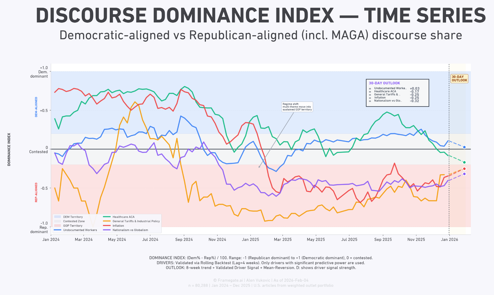
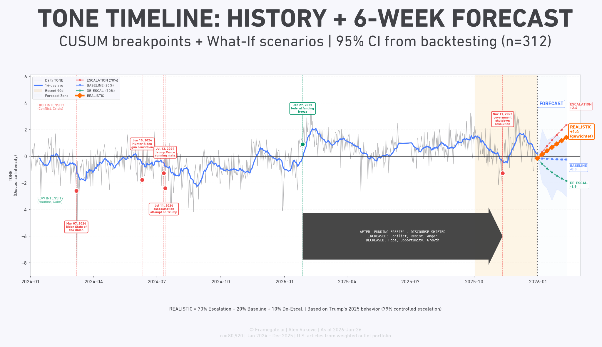

Know what to change
before the next poll.
Evidence-based political campaigning for algorithmic media democracies.
YOUR PROBLEM
The poll shows the result.
The poll shows the result.
But political meaning is made in transit.
Algorithms fragment the message. Media and creators frame it. People encounter it in motion and turn it into public judgment and political preference.
01One statement
A political leader introduces one intended message.
02Expanding circulation
Media, platforms and conversations multiply and transform it.
03One judgment
The voter receives a newly weighted mixture. The poll records the result.
WHERE WE WORK
We work between what you say
We work between what you say
and what the next poll records.
We identify what is driving it.
We compare which decisions can change its direction.
We recommend the next move.
WHAT WE WORK WITH
We connect media, social,
We connect media, social,
polling and electoral evidence.
MediaSocialPollingElectoral evidence
WHAT WE CAN SHOW
We show where the political field
We show where the political field
is moving.

Where can your issue gain ground?
Track dominance, contested ground and the direction of movement.
View full diagram →
What is your opponent likely to do next?
Translate repeated behavior into weighted scenarios—not certainty.
View full diagram →
FROM META TO NANO
We work at
We work at
every level.
“The whole mood flipped. What the hell happened?”Meta levelThe national political discourse
“Nobody gives a damn about my issue. How do I make them care?”Macro levelNational policy fields
“My party’s killing me. What now?”Meso levelParty impact
“My opponent’s on a roll. How do I stop them?”Micro levelCandidates and incumbents
“This message ain’t landing. What’s wrong with it?”Nano levelA single message, speech or town hall
WHAT YOU GET
We turn the evidence
We turn the evidence
into your next move.
What changed.
DIAGNOSISWhy it changed.
DRIVERSWhat could change it.
OPTIONSWhat to do next.
RECOMMENDED MOVEDELIVERED AS
Decision briefing · Visual evidence · Recommended action
WHO WE WORK WITH
We work across the full
We work across the full
political lifecycle.
CandidatesIncumbentsElected officials
Parliamentary groupsParty organizationsGoverning teams
From political idea to campaign.
From mandate to visible action.
From governing to the next election.